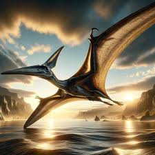
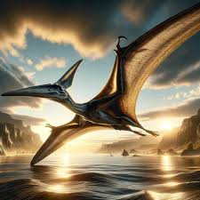

Pteranodon był jednym z najbardziej znanych i rozpoznawalnych pterozaurów, żyjącym około 85-70 milionów lat temu, w późnej kredzie, na terenach dzisiejszej Ameryki Północnej. Choć często mylony jest z dinozaurami, Pteranodon należał do grupy gadów latających, a nie ptaków czy gadów lądowych. Jego imponujący rozpiętości skrzydeł, sięgający nawet około 7 metrów u dorosłych osobników, sprawiał, że był to jeden z największych latających zwierząt w historii.
 Charakterystyczną cechą Pteranodona była jego długa, smukła szyja oraz wydłużony dziób, który pomagał mu w łapaniu zdobyczy podczas lotu. Jego skrzydła były dobrze przystosowane do szybkiego i zwinengo latania, a skórzaste błony rozpięte między kośćmi skrzydłowymi umożliwiały mu efektywne poruszanie się w powietrzu. Mimo że nie posiadał zdolności do aktywnego napędzania lotu, Pteranodon potrafił wykorzystywać prądy powietrzne, aby utrzymać się w locie przez dłuższy czas.

Większość znanych skamieniałości Pteranodona pochodzi z rejonu dzisiejszego stanu Kansas w USA, gdzie odkryto liczne szczątki tych prehistorycznych gadów. Choć dokładna dieta Pteranodona nie jest całkowicie zrozumiała, przypuszcza się, że był on przede wszystkim rybożerny, polując na małe ryby i inne organizmy wodne z powierzchni oceanów i rzek. Jego imponujące rozmiary i zdolność do lotu uczyniły go niezapomnianym elementem prehistorycznego ekosystemu.
Charakterystyczną cechą Pteranodona była jego długa, smukła szyja oraz wydłużony dziób, który pomagał mu w łapaniu zdobyczy podczas lotu. Jego skrzydła były dobrze przystosowane do szybkiego i zwinengo latania, a skórzaste błony rozpięte między kośćmi skrzydłowymi umożliwiały mu efektywne poruszanie się w powietrzu. Mimo że nie posiadał zdolności do aktywnego napędzania lotu, Pteranodon potrafił wykorzystywać prądy powietrzne, aby utrzymać się w locie przez dłuższy czas.

Większość znanych skamieniałości Pteranodona pochodzi z rejonu dzisiejszego stanu Kansas w USA, gdzie odkryto liczne szczątki tych prehistorycznych gadów. Choć dokładna dieta Pteranodona nie jest całkowicie zrozumiała, przypuszcza się, że był on przede wszystkim rybożerny, polując na małe ryby i inne organizmy wodne z powierzchni oceanów i rzek. Jego imponujące rozmiary i zdolność do lotu uczyniły go niezapomnianym elementem prehistorycznego ekosystemu.

Adres: Zwoleń Radosna 26-700
Kontakt: nr. 797 715 111
email: jurrasicpark@gmail.com
Godziny otwarcia